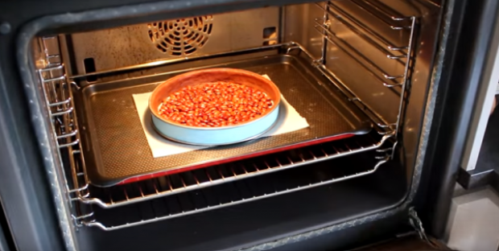

Ingrédients :
- 1 pâte sucrée au cacao
- 200 g de sucre
- 65 g d'eau
- 80 g de crème liquide entière
- 45 g de beurre
- 5 g de sel
- 120 g de chocolat noir pâtissier (70%)
- 120 g de crème liquide entière
- 10 g de beurre
Pour le caramel beurre salé:
Pour la ganache chocolat noir:
Etapes de préparation :
Préparation de la pâte:
1. Commencez par étaler la pâte sucrée au cacao sur un plan de travail fariné puis enroulez-la autour d’un rouleau à pâtisserie et déposez-la sur un moule à tarte beurré en découpant le surplus de pâte.
2. Venez piquer le fond à l’aide d’une fourchette et laissez-la reposer 30 minutes au réfrigérateur.
3. Après repos, venez déposer du papier sulfurisé et des pois de cuisson dans le fond de tarte puis enfournez-la à 180° pendant 15 à 20 minutes.
4. À la sortie du four, retirez les pois et le papier cuisson puis laissez refroidir le fond de tarte.
Préparation du caramel:
5. Dans une casserole, versez le sucre et l’eau que vous portez à ébullition jusqu’à l’obtention d’un caramel brun.
6. Retirez ensuite la casserole du feu et ajoutez la crème liquide tout en mélangeant vigoureusement. Incorporez également le beurre coupé en petits dés et le sel puis mélangez de nouveau.
7. Une fois le caramel prêt, venez le verser dans le fond de tarte et mettez-la 3 heures au réfrigérateur.

Préparation ganache au chocolat:
8. Versez la crème liquide dans une casserole et portez-la à ébullition. Versez-la ensuite sur le chocolat que vous avez coupé en morceau puis mélangez jusqu’à l’obtention d’une ganache bien lisse. Ajoutez le beurre et mixez de nouveau..
9. La ganache est prête, versez-la sur le caramel au beurre salé et répartissez-la délicatement
10. Laissez-la reposer au réfrigérateur pendant 3 heures et dégustez !
Petit plus : vous pouvez même la décorer avec quelques copeaux de chocolat !